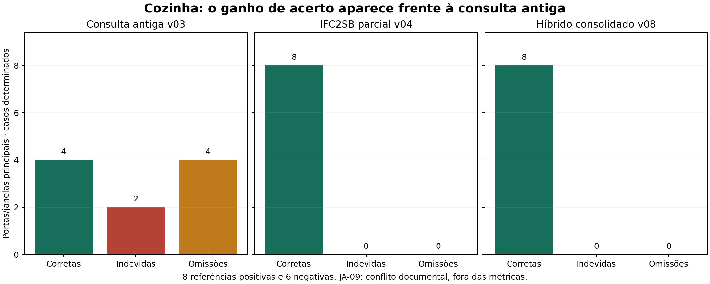
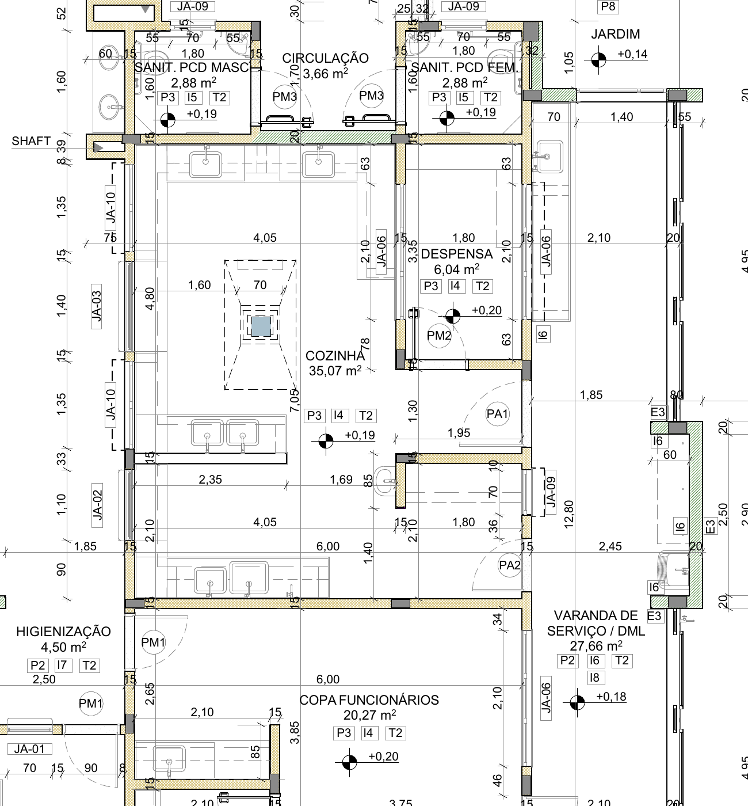
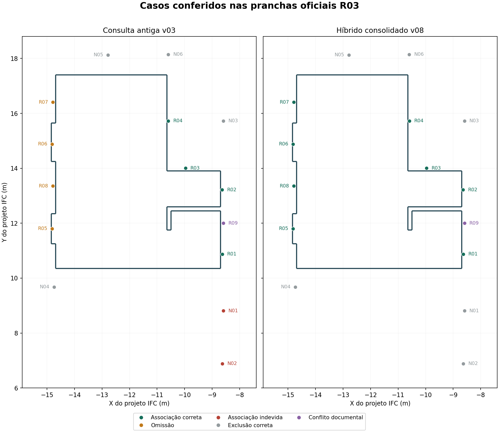
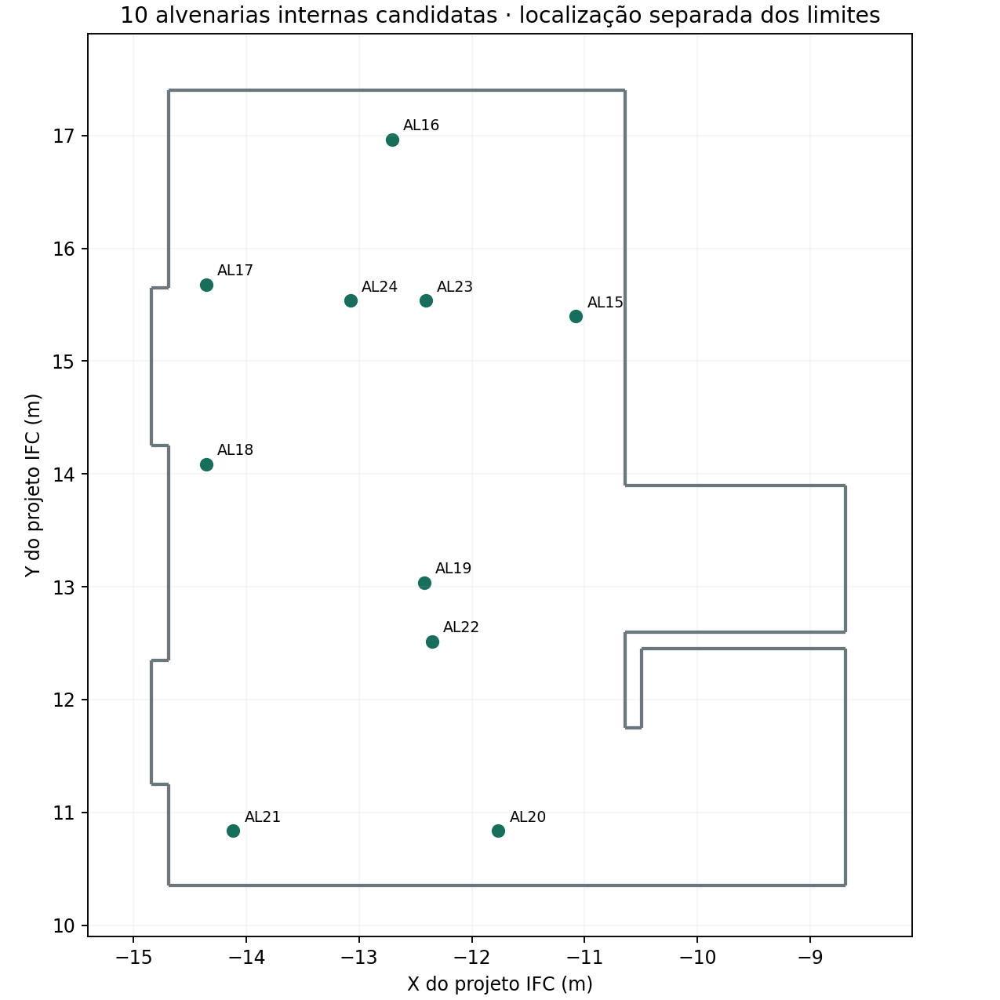

O Notebook 1 v08 reúne uma entrada única para processar a cozinha: recortes IFC2SB, interfaces adaptadas de Kiavarz e sinais CGAL verificados. Lilis permanece comparação opcional. A referência documental é consultada depois da previsão e não seleciona as associações do algoritmo.
Interpretação da comparação v03: a consulta antiga já advertia que a cadeia por parede não demonstra pertencimento. A linha v03 avalia sua listagem como hipótese exploratória para essa pergunta; não afirma que a v03 certificava a atribuição arquitetônica das esquadrias.
Frente à consulta antiga v03, foram recuperadas quatro janelas e removidas duas associações com a copa vizinha. Nos 14 casos determinados da conferência, o híbrido obteve oito associações corretas, seis exclusões corretas, nenhuma associação indevida e nenhuma omissão. A janela JA-09 é indeterminada por conflito entre documentos e fica fora das métricas.
O IFC2SB parcial v04 já produz as mesmas esquadrias principais. Portanto, não foi demonstrado ganho de contagem frente a essa etapa. A consolidação acrescenta organização por interface, ligações com o grafo completo, dez candidatos internos e três componentes sem FillsVoids, mantendo sua natureza candidata.

| Procedimento | Corretas | Indevidas | Omissões | Exclusões corretas | Precisão no recorte | Recuperação no recorte |
|---|---|---|---|---|---|---|
| Consulta_N1_v03_parede_abertura | 4 | 2 | 4 | 4 | 66.7% | 50.0% |
| IFC2SB_parcial_v04 | 8 | 0 | 0 | 6 | 100.0% | 100.0% |
| Hibrido_consolidado_v08 | 8 | 0 | 0 | 6 | 100.0% | 100.0% |
Foram inspecionadas visualmente as pranchas oficiais R03: 02 (planta geral), 24 e 25 (cozinha) e 26 (despensa). A correspondência ao IFC usa tipo, posição relativa e vizinhança. A planta geral 02 mostra JA-09 no lado leste da cozinha; a ampliação 24 e a vista 02 da prancha 25 não a representam. O IFC contém a janela nessa posição. A rotina conserva sua associação geométrica e registra a divergência documental.
Referência caso a caso e hashes · Origem oficial FNDE.

Recorte da prancha 02/36 R03, FNDE. Desenho original sem anotações acrescentadas; extração apenas para leitura.

Mapa derivado do IFC: contorno da cozinha em Z = 1,20 m e centros dos objetos projetados em XY. As janelas altas aparecem por projeção. R/N correspondem às linhas da referência documental; a figura não é a prancha original.
| Caso | Tipo | Referência | Associado | Resultado | Leitura do projeto | Prancha/vista |
|---|---|---|---|---|---|---|
| R01 | PA2 | sim | True | acerto_associacao | Lado leste, saída de lixo da cozinha para a varanda de serviço. | 02: planta geral; 24: planta; 25: vista 02 |
| R02 | PA1 | sim | True | acerto_associacao | Lado leste, entrada de alimentos da cozinha. | 02: planta geral; 24: planta; 25: vista 02 |
| R03 | PM2 | sim | True | acerto_associacao | Ligação cozinha–despensa, no rebaixo do lado leste. | 02: planta geral; 24: planta; 26: despensa |
| R04 | JA-06 | sim | True | acerto_associacao | Janela entre cozinha e despensa, acima do trecho com PM2. | 02: planta geral; 24: planta; 25: vista 02; 26: despensa |
| R05 | JA-02 | sim | True | acerto_associacao | Lado oeste, trecho sul de recepção de louças usadas. | 02: planta geral; 24: planta; 25: vista 04 |
| R06 | JA-03 | sim | True | acerto_associacao | Lado oeste, abertura central de preparo final/distribuição. | 02: planta geral; 24: planta; 25: vista 04 |
| R07 | JA-10 | sim | True | acerto_associacao | Lado oeste, janela mais ao norte, junto ao preparo de verduras. | 02: planta geral; 24: planta; 25: vista 04 |
| R08 | JA-10 | sim | True | acerto_associacao | Lado oeste, janela entre JA-02 e JA-03, junto ao preparo de carnes. | 02: planta geral; 24: planta; 25: vista 04 |
| R09 | JA-09 | indeterminado | True | indeterminado_documental | A planta geral 02 mostra JA-09 no lado leste da cozinha, acima da PA2. A planta ampliada 24 e a vista 02 da prancha 25 não representam essa janela. O IFC contém JA-09 nessa posição. Divergência documental preservada. | 02: planta geral; conflito com 24: planta e 25: vista 02 |
| N01 | JA-06 | nao | False | acerto_exclusao | Janela da copa de funcionários, ao sul da cozinha, na mesma parede longa do lado leste. | 02: planta geral, copa de funcionários |
| N02 | PA2 | nao | False | acerto_exclusao | Porta da copa de funcionários para a varanda, ao sul da cozinha; compartilha hospedeiro longo. | 02: planta geral, copa de funcionários/varanda |
| N03 | JA-06 | nao | False | acerto_exclusao | Janela do lado externo da despensa, oposta à cozinha. | 02: planta geral; 26: planta e vista da despensa |
| N04 | PM1 | nao | False | acerto_exclusao | Porta da higienização, ao sul do trecho oeste da cozinha. | 02: planta geral, higienização |
| N05 | PM3 | nao | False | acerto_exclusao | Porta do sanitário PCD masculino para a circulação, ao norte da cozinha. | 02: planta geral, sanitário PCD masculino |
| N06 | PM3 | nao | False | acerto_exclusao | Porta do sanitário PCD feminino para a circulação, ao norte da cozinha. | 02: planta geral, sanitário PCD feminino |
AL25 permanece IfcWall e é apresentado como outro preenchimento declarado no IFC, sem ser transformado em porta ou janela. Dez alvenarias de apoio internas são registradas como candidatos de localização. A prova por vértices não certifica contenção integral de geometrias côncavas nem função construtiva.

Também foram localizados três componentes V02 sem IfcRelFillsElement. Dois correspondem por posição aos requadros para tela mosquiteiro indicados junto às JA-10; o terceiro acompanha a JA-09 e compartilha sua pendência documental. São ligações geométricas candidatas, distintas de preenchimento ou decomposição declarados.
| Caso | Nome IFC | Referência | Candidato recuperado | Conferência | Evidência |
|---|---|---|---|---|---|
| A01 | V02 | sim | True | acerto_associacao | Componente do lado externo da JA-10 norte; as ampliações indicam requadro para tela mosquiteiro. A correspondência funcional é uma leitura documental por posição, não IfcRelFillsElement. |
| A02 | V02 | sim | True | acerto_associacao | Componente do lado externo da JA-10 central; requadro para tela mosquiteiro indicado na ampliação. |
| A03 | V02 | indeterminado | True | indeterminado_documental | Componente junto à JA-09 do IFC. A própria JA-09 diverge entre a planta geral e as ampliações. |
| A04 | V02 | nao | False | acerto_exclusao | Componente junto à janela externa da despensa, sem ligação direta com a cozinha. |
A conversão IFCtoLBD e o grafo enriquecido v03 são reaproveitados por hash; Java e a extração global dos 41 ambientes não são reexecutados nesta revisão. IFC2SB e Kiavarz foram executados novamente na cozinha. As avaliações CGAL continuam entradas verificadas. Os GUIDs únicos ligam o complemento às identidades existentes do grafo principal.
O arquivo final preserva, byte a byte, o grafo histórico de 117.591 triplas como prefixo e contém 120191 triplas na união reaberta. A nova consulta recupera nove esquadrias distintas, incluindo a JA-09 pendente, além de permitir consultar dez candidatos internos e três componentes. As consultas antigas permanecem históricas; a consulta atual percorre con:esquadriaAssociada.
Grafo completo compactado · Consulta atual · Resposta · Comparação completa em CSV.